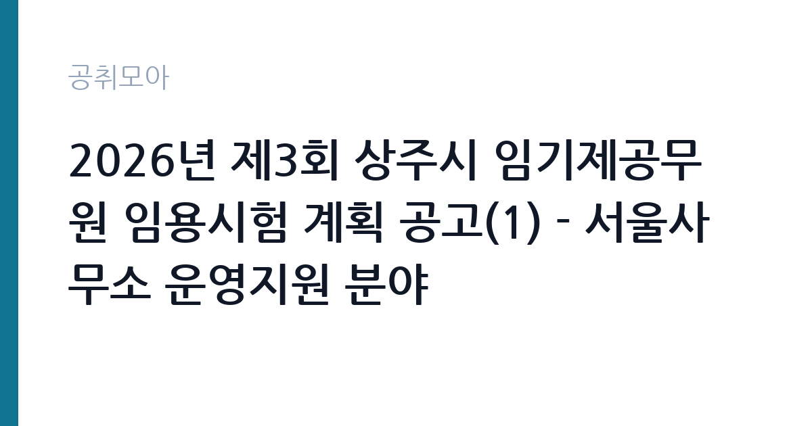

[지자체] 2026년 제3회 상주시 임기제공무원 임용시험 계획 공고(1) - 서울사무소 운영지원 분야
경상북도 상주시 · 서울 · 마감 2026-10-20 (D-15) · 출처 나라일터

한눈에 보는 모집 조건
| 기관 | 경상북도 상주시 |
|---|---|
| 공고명 | 2026년 제3회 상주시 임기제공무원 임용시험 계획 공고(1) - 서울사무소 운영지원 분야 |
| 고용형태 | 임기제 |
| 근무지 | 서울 |
| 게시일 | 2026-10-06 |
| 마감일 | 2026-10-20 (D-15) |
지원자격, 이렇게 읽으세요
- 시간선택제임기제 마급 1명
- 접수 ~2026-10-20 마감
- 세부 조건은 원문 공고문 확인
서울사무소 운영지원 분야는 통상 행정 실무나 대외협력, 민원 응대 경험을 요구하는 경우가 많습니다. 국회와 중앙부처, 재경 향우회 같은 유관 기관과 소통하는 일이 포함되므로 문서 작성과 응대 역량이 중요합니다. 확정 응시자격과 우대 조건은 원문 공고문에서 확인하셔야 합니다.
이 공고의 포인트
이 공고의 가장 큰 특징은 근무지가 서울 영등포구라는 점입니다. 상주시 소속 공무원이지만 실제 근무지는 서울사무소이므로 출퇴근 부담이 수도권 기준으로 형성됩니다. 마급은 9급 상당이며 임용 기간 2년에 최대 5년까지 연장될 수 있습니다. 접수 기간이 10월 19일부터 20일까지 단 이틀이므로 미리 준비하시기 바랍니다.
전형은 어떻게 진행되나
전형은 서류전형과 면접시험으로 진행되며 필기시험이 없습니다. 접수는 2026년 10월 19일부터 10월 20일까지이며, 접수 방법과 제출처는 원문에서 확인하셔야 합니다. 문의처는 상주시 총무과 054-537-7163입니다.
원문에서 확인한 전형 방식
○ 모집분야: 서울사무소 운영지원 (1명) ○ 근무지역: 서울특별시 영등포구 (상주시서울사무소 근무) ○ 임용기간: 2년(최대 5년) ○ 선발방법: 서류전형 및 면접시험 ○ 접수기간 : 2026년 10월 19일 ~ 2026년 10월 20일 ○ 문의처 : 054-537-7163
이런 분께 추천해요
- 서울이나 수도권에 거주하면서 지자체 소속으로 일하고 싶으신 분
- 행정 지원과 대외협력, 민원 응대 실무 경험이 있으신 분
- 국회와 중앙부처 동향 파악, 향우회 교류 같은 대외 업무에 강점이 있으신 분
지원 전 체크리스트
- 근무지가 경북 상주가 아니라 서울 영등포구임을 확인하고 지원하셔야 합니다
- 접수 기간이 10월 19일부터 20일까지 단 이틀이므로 서류를 미리 준비하셔야 합니다
- 행정 실무와 응대 경험을 증빙할 경력 서류를 챙기시기 바랍니다
- 시간선택제 근무시간과 보수 수준을 원문에서 확인하셔야 합니다
모집 일정과 제출 타이밍
공고 게시일은 2026년 10월 6일이며 원서 접수는 10월 19일부터 20일까지입니다. 이후 서류전형 합격자 발표와 면접시험이 순차적으로 진행됩니다. 면접 장소가 상주일 가능성이 있으므로 지방 이동 일정을 미리 염두에 두시기 바랍니다. 면접 장소와 방법이 상주인지 서울인지 원문에서 확인하고 이동 계획을 세우시기 바랍니다.
직무 이해하기: 지자체
서울사무소 운영지원 담당자는 국회와 중앙부처 동향 파악, 국비 확보 지원 자료 정리, 재경 향우회와 출향인사 교류 지원, 상주 농특산물과 관광 홍보 지원 업무를 수행합니다. 시장과 간부들의 서울 출장 일정 지원과 사무소 시설 관리도 맡습니다. 지자체와 중앙을 잇는 창구 역할을 하므로 대외 예절과 문서 작성 능력이 중요합니다. 출장 공무원들의 숙소와 차량 배차 같은 실무 지원도 맡으므로 꼼꼼한 일정 관리 능력이 요구됩니다.
자기소개서 작성 팁
자기소개서에는 대외협력이나 의전, 민원 응대 경험을 상황 중심으로 기술하시기 바랍니다. 여러 기관을 조율했던 경험이 있다면 본인의 역할과 결과를 구체적으로 적으시면 좋습니다. 수도권 거주자로서 서울사무소 근무에 대한 이해와 출향민과 고향을 잇겠다는 각오를 담으시면 설득력이 높아집니다.
면접 준비 포인트
면접에서는 서울사무소의 역할에 대한 이해를 질문받을 가능성이 높습니다. 지자체 서울사무소가 왜 필요한지 본인의 언어로 정리해 가시기 바랍니다. 돌발 민원이나 상급자 출장 지원 같은 상황 질문에는 절차와 우선순위를 밝혀 답변하시면 좋습니다.
급여·근무조건 읽는 법
시간선택제임기제 마급은 9급 상당으로 지방공무원보수규정의 9급 1호봉 하한액을 기준으로 보수가 책정됩니다. 시간선택제는 실제 근무시간 비율만큼 보수를 받으며, 서울 근무라도 별도 지역 수당이 보장되는 것은 아니므로 확정 보수는 원문 공고문에서 확인하셔야 합니다. 출처는 지방공무원보수규정과 임기제 보수 안내 자료입니다.
자주 묻는 질문
- 근무지가 정말 서울입니까
원문 공고문에 근무지역이 서울특별시 영등포구 상주시서울사무소로 명시되어 있습니다. 확정 사항은 원문에서 재확인하시기 바랍니다. - 서울사무소는 무슨 일을 합니까
국회와 중앙부처 대외협력, 향우회 교류, 농특산물 홍보, 출장 지원 등을 수행하는 지자체의 서울 창구입니다. - 임기는 얼마나 됩니까
임용 기간은 2년이며 근무 실적에 따라 최대 5년까지 연장될 수 있습니다.
함께 보면 좋은 공고
[지자체] 2026년 제3회 상주시 임기제공무원 임용시험 계획 공고(6) - 학예연구 분야 — 마감 2026-10-20[지자체] 2026년 상주시 임기제공무원 임용시험 계획 공고(5) - 중앙제어실 운영 분야(상수도) — 마감 2026-10-20[지자체] 2026년 제3회 상주시 임기제공무원 임용시험 계획 공고(4) - 상황실 전담요원 분야 — 마감 2026-10-20출처: 나라일터 공개정보를 바탕으로 공취모아가 정리한 안내글입니다. 모집 조건·일정은 변경될 수 있으니 지원 전 반드시 원문 공고문을 확인하세요. 본 글은 정보 제공용이며 합격을 보장하지 않습니다.